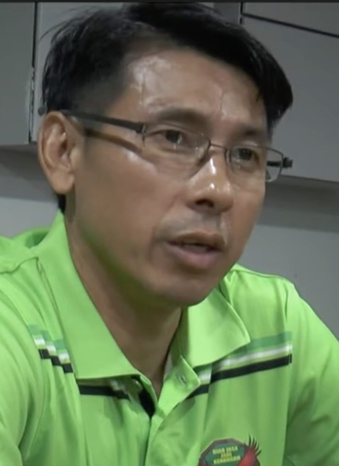

Боян Ходак возглавил сборную Малайзии в рамках реорганизации штаба
55-летний хорватский специалист возвращается в малайзийский футбол, а Тан Ченг Хоэ переходит на должность директора сборной.

ПЕТАЛИНГ-ДЖАЯ — Футбольная ассоциация Малайзии (FAM) во вторник, 24 ноября 2026 года, официально объявила о назначении Бояна Ходака (Bojan Hodak) на пост главного тренера мужской национальной сборной. 55-летний хорватский специалист сменил исполняющего обязанности наставника Тана Ченг Хоэ (Tan Cheng Hoe), который руководил командой с 25 июня после ухода Питера Кламовски (Peter Cklamovski). Ченг Хоэ отныне переходит на должность директора национальной сборной на постоянной основе.
Солидный послужной список в регионе
За плечами Ходака — два десятилетия тренерской работы в Юго-Восточной Азии, и в первую очередь в Малайзии. Его самым громким триумфом на внутренней арене стал сезон 2012 года: тогда во главе «Келантана» (Kelantan) он оформил «золотой требл», выиграв Суперлигу Малайзии, Кубок футбольной ассоциации и Кубок Малайзии.

Специалист продолжил штамповать трофеи и в других клубах: в 2014 году он привел «Джохор Дарул Тазим» (Johor Darul Ta'zim) к золотым медалям Суперлиги. Несколько лет спустя под его началом «Куала-Лумпур Сити» (Kuala Lumpur City FC) сенсационно завоевал Кубок Малайзии 2021 года, а в 2022 году столичная команда под руководством хорвата добралась до финала Кубка АФК, завоевав серебряные медали турнира.
Знаком Ходак и с системой сборных Малайзии. С 2017 по 2019 год он возглавлял молодежную сборную страны (до 19 лет) и в 2018 году привел ее к триумфу на чемпионате АСЕАН U-19 в индонезийской Сурабае. За пределами Малайзии Ходак выигрывал чемпионат Камбоджи с «Пномпень Краун» (Phnom Penh Crown), а также тренировал индонезийские клубы ПСМ «Макасар» (PSM Makassar) и «Персиб Бандунг» (Persib Bandung).
Доверие руководства и новые задачи
Президент FAM датук Аб Гани Хассан (Datuk Ab Ghani Hassan) подчеркнул, что прекрасное знание местных футболистов и специфики региональных соревнований сделали Ходака фаворитом в борьбе за этот пост.
«В FAM уверены: колоссальный опыт Ходака в футболе Малайзии и всей Юго-Восточной Азии даст ему преимущество в понимании местного контекста и потенциала малайзийских игроков, — подчеркнул Аб Гани в официальном заявлении во вторник. — Его успехи с рядом клубов в Малайзии и Индонезии также наглядно доказывают его умение строить боеспособные команды, претендующие на самые высокие награды».
Пока Ченг Хоэ займется координацией структурных процессов в роли директора, первоочередной задачей Ходака станет формирование состава «Малайских тигров» (Harimau Malaya) к предстоящим региональным матчам и окнам квалификации Кубка Азии. Главные цели штаба — стабилизировать результаты и поднять сборную в рейтинге ФИФА.